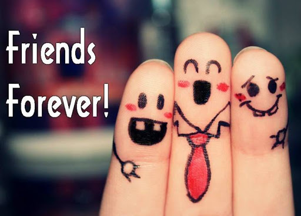
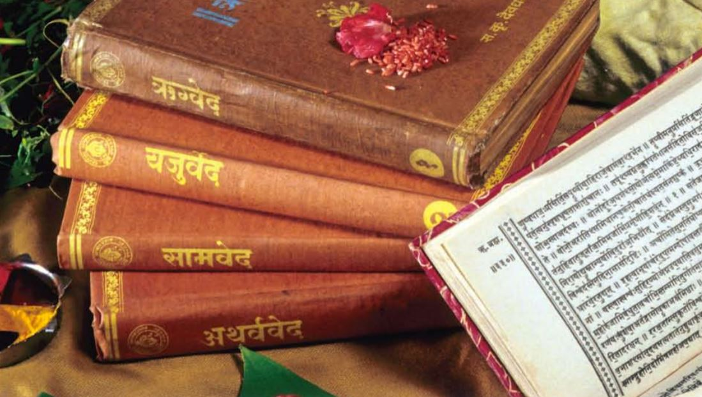

नमस्कार मंडळी!! खुश आहात ना? नसलात तर स्वतःसाठी खुश रहायचा प्रयत्न्त तर करा. मला तर जाम भारी वाटत आहे मनमोकळेपनाने जे लिहता येत आहे. तुम्हाला वाचून चांगल वाटल तर तुमच्यासाठी लिहिण नाही तर माझ्यासाठी तर लिहिणारच आहे. मराठी मध्ये लिहिण्याची मज्जाच काई वेगळी आहे, हे त्यालाच समजतं ज्याने मराठी भाषेला आपली पहिली भाषा मानली आहे. रांगडी भाषा म्हणतात मराठीला, जे काही आहे ते सरळ आणि थेट. उगीच मस्का पॉलिश नाही. इथे मी काही बाकी भाषांना नावं वगैरे ठेवत नाहीये, ना ही कुणाला कमी लेखात आहे. हे माझा वाईयकतीक मत आहे, आणि आपल मत मांडन्याचा हक्क दिलाय आपल्याला संविधनाने. मग कृपिया करून कुणीच वाईट ई. मानून घेऊ नाकात. हे फक्त माझे मराठी वरचे प्रेम समझा, म्हणूनच मी मराठीत लिहत आहे. वाचताना काही चुका आढळल्यास मला त्या निदर्शनात आणून द्याव्यात. ‘निंदकाचे घर असावे शेजारी’ या उक्ती प्रमाणे माझ्यात सुधारणा अपेक्षीत आहेत माला. फक्त सुधारणा सांगायच्या सोडून लिखणवर विनोद करत बसलेला नाही हो आवडणार माला. तुम्हीच माझे सर्वेसर्वा, वाचक आहात, माझा हा पहिला प्रयत्न फोल नका ना ठरू देवूत.
जेव्हा कुणी माला विचारत की तुझ एखाद्या मुद्द्या बद्दलच मत काय तर तेव्हा माझ मत सांगताना मी ते समोरच्याच्या पहिल्या भाषेत सांगायचा प्रयत्न करते म्हणजे कसं त्याला आपलं मत पटत. कारण आपण जे बोललो ते त्याच्या मनात जाऊन भिडत कारण काय तर ‘ भाषा ’. म्हजे बघा ना, आपण खूप टेंशन मध्ये असताना, भांडण करताना, प्रेम करताना, शिव्या घालताना, आपण आपल्या पहिल्या भाषेचाच वापर करतो. म्हणूनच वर मी म्हणाले की मराठीत लिहते कारण ती माझी पहिली भाषा आहे आणि त्यात मी स्वतःला सुंदर व्यक्त करू शकते. आता हे झाला माध्यम कशात लिहणार हे पक्का झाल. आता काय लिहू यात गोंधळ आहे. बायकांकडे बोलण्यासाठी खूप मुद्दे असतात हो, त्या कुठल्याही मुद्द्यावरून कुठल्याही मुद्द्यावर उडी मारून बोलू शकतात. मग वापरलेली चहापट्टी कुंडीत का टाकायची या पासून अगदी CAB/NRC परीयंत म्हणून गोंधळ आहे हो बाकी सुचत नाही यातली बाब नाही. खूपच सुचतं ही समस्या आहे. जेव्हा आम्ही फिरायला बाहेर जायचो माझ्याकडे खूप कपडे असल्या कारणाने निवड करण्यात माला वेळ लगायचा तेव्हा माझी आई म्हणायची खूप आहेत ना म्हणून अडचण आहे आमच्याकडे 2 च होते म्हणून पटकन घालून मोकळे. अगदी तस्सच झालाय बघा! आता हेच बघना काही मुद्दा ना घेताच मी एवढ लिहूनही टाकल. शेवटी मी पण एक बाईच आहे ना.
आमच्यावर लिहिणारे भरपूर भेटतील पण आमचा ऐकुण घेणारे तसे कमीच. मग काय हक्काने लग्न करून घेऊन आणलेला नवर्या लाच ऐकावतो॰ तोही बिचारा किती सहन करणार मग तो पण आपल्या बिनकामाच्या बोलण्याकडे (त्याच्यासाठी बिनकामच आपल्यासाठी ते म्हहत्वाच असतं हो) हळू हळू दुर्लक्ष करतो आणि एकुलता एक आपलं ऐकणारा माणूस हरवतो. दोस्त दोस्त ना रहा प्रमाणे अहो अहो नाही राहिले म्हणतो, हिरमुसतो आणि मोर्चा मुलांकडे वळवतो. मुलं बिचारी देवाघरची फुलं असं आपल्याला वाटत, त्यांच्याकडे जाऊन छान वाटेल आपल्याला असा समजून आपण जातो आणि ते आपल्यालाच आई हे प्रोजेक्ट करून दे अभ्यास घे माझे हे कपडे कुठेत उद्या तिफीन मध्ये काय देणार आहेस आई हेयर स्टाइल करून दे माला खायला हेच नको तेच दे ई. त्यांचं गाणं सुरू करतात त्यात आपण आधीच वैतागलेले असतो आणि सगळं आइकून असं वाटत की असती एखादी जवळची मैत्रीण जीने मला समजून, ऐकून घेतले असते तर बर झाल असतं निदान मन तरी हलक झाल असतं आणि त्या वेळेस आपल्याला आपल्या मैत्रिणी ची खूप आठवण येते (मिस्स यू गर्ल्स!!!). पण वेळ गेलेली असते आणि ती ही दूर गेलेली असते आणि तिलाही कदाचित अजून जाणीव झालेली नसते की मैत्री हे नात आयुष्यभरासाठी पुरून उरणार आहे आणि अजूनही आपल्याला त्याची गरज आहे. म्हणून मी मला जे बोलायचे ते लिहुन काढायच ठरवलय. तुम्ही कुणी वाचल तर ठीक नाही तर मैत्रिणीला सांगितलं समजून मन तरी मोकळा करता येईल, आणी म्हणूनच नावच तस ठेवलाय उगीच काहीतरी.
I always fall in love with beautiful sentences, stories, songs. I always feel that to fall in love with such amazing creations, art, literature you just have heart of artist. To understand depth of their art you should feel all the pain, feelings, love, emotions that artist gone through. When we like something there are emotion which are always attached with that liking, it may be some incident, person, relations are their behind that liking.

Whatever we select that depicts our personality. Same things happen about our friendship. Sangat ka asar toh padata hi hai, jaisa sang waisa rang
कदल सीप भुजंग मुख, स्वाति एक गुन तीन
जैसी संगति बैठिए, तैसोई फल दीन
जैसे एक ही स्वाति बूंद केले के गर्भ में पड़कर कपूर बन जाती है, सीप में पड़कर मोती बन जाती है और अगर सांप के मुंह में पड़ जाए तो विष बन जाती है। ठीक उसी तरह इंसान की संगत का उस पर अच्छा या बुरा प्रभाव ज़रूर पड़ता है|
On getting good company, the animal also learns courteous behavior. On getting wrong association, man also starts behaving like animal.
What a man learns in childhood, he learns from his home, family and neighborhood environment. His consistent life becomes the foundation stone in construction.
Friendship is the kind of relationship in which person selected by us. You don’t need the same cast, gender, age, but what is compulsory is just open heart. It is a stronger form of interpersonal bond, and in life it plays an important role. Obviously we always used to listen more of our friends than any other person in relationships we have made. But why it happens? Bcoz, They don’t judge us they always try to understand us. Whatever we say or do they just listen, so we can freely share all good and bad sides of ours. They are aware about our behavior, moods so whenever we talk to them we just feel happy. We always need person in our life who knows us very well still loves us deeply, and be with us without any expectations. Friend, who knows everything about your life and still loves you, so remember no one is failure who has friends. Friendship is not big thing its million things together.
One said so truly that Friendship is a connection that lasts longer than any other because of only one strong element in it which even a love-relationship lacks and that is “no-expectations.” The most amazing hugs, the resounding laughter, the sometimes threatening to walk away and yet stay back without the need of any persuading, the hang-outs, the picking at each other, the calling names, the sharing of secrets and so much more without serious and weighty expectations or demands, friendship truly is the best relationship we make in this world
How we make friends? It mostly happens when they help us or we help them that action converted into friendship, or maybe when we both are going through same phase of life’s torture and you just share common bond within less time period. Sometimes you meet a person and you just clicked you comfortable with them like you have know them your whole life and you don’t have to pretend anything else. Just wanted to let you know about my friends I am sharing my friendship stories you also share them with me. Will post it on my blogs let’s start with the series.
नअथर्ववेद संहिता १. मेधाजनन सूक्त(बुद्धी दे): हे ब्रह्मा जिनको वाचस्पती बोला गया है| वाचस्पती मतलब अव्यक्त को व्यक्त करनेवाले जिनमे पुरा ब्रह्मांड समया है जिसने इज विश्व को प्रकट कीय है उन्हीसे किसी विशिष्ट उपलब्धी के लीये प्राथ्ंना कीय जाणा उचित है| १.ये जो त्रीसप्त है जो विश्व के सभी रुपो को धरण कर के गतिशील है, संव्यप्त है, हे वाचस्पती आप उंके शरीरस्त बल को हमे प्रदान करे. Now what is त्रिसप्त it maybe 3*7/3+7/3^7/7^3 any p/c of numbers 7 & 3, in short it may be whole world like tin lok, tin gun, tin aayam, tridev and sapta aavran, sapta dhatu, parmanu k saat aavran, etc. २. हे वाचस्पती आप हमेशा आपके दिव्यरूप मे हमारे सम्मुख आये हे वासोस्पते आप हमे प्रफुल्लित कर के प्राप्त विद्या हममे स्थिर करे. (vasaspte means hame aavas pradan karnewale) brahma gives us home to live. ३. धनुश की खिची हुयी प्रत्यंचा के समान सर्वविद्या प्राप्त करणे हेतु बुद्धी और साधन सामग्री हमे प्रदान करे औए उन्हे हम मे स्थिर रखे| ४. आपका हमे सान्निध्य प्राप्त हो और हम कभी ज्ञान से विम्मुख ना रहे| २. रोगउपशमन सूक्त (give us a strong immunity)

{kind=link}